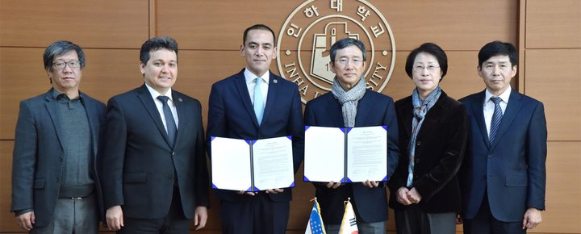

Asosiy
Тошкентдаги Инҳа университетида магистратура босқичи очилади

Ўзбекистон ахборот технологиялари ва коммуникацияларини ривожлантириш вазири в.б. Шерзод Шерматов, олий ва ўрта махсус таълим вазири Ином Мажидов ва Тошкент шаҳридаги Инҳа университети ректори Сарвар Бабаходжаев таркибидаги делегация Корея Республикасидаги Инҳа университети президенти Сунья Чой хоним билан музокаралар ўтказди.
Учрашув давомида томонлар Тошкент шаҳридаги Инҳа университети таълим дастурларини кенгайтириш масаласини кўриб чиқишди. Хусусан, бакалавриат таълим йўналишларини янада кенгайтириш зарурати таъкидлаб ўтилди.
Бундан ташқари, университетда магистратура таълим йўналишларини очиш масаласи кун тартибидан ўрин олди.
Шунингдек, Тошкент шаҳридаги Инҳа университетининг айни пайтда Корея Республикасида таълим олаётган охирги босқич талабалари билан учрашув ўтказилди.
Учрашув якунларига кўра, икки университет вакиллари Тошкент шаҳридаги Инҳа университетида магистратура дастурини очиш ҳамда университетнинг уч нафар талабаларига Жанубий Кореяда таълим олиш учун грант тақдим этиш юзасидан баённома имзолашди.